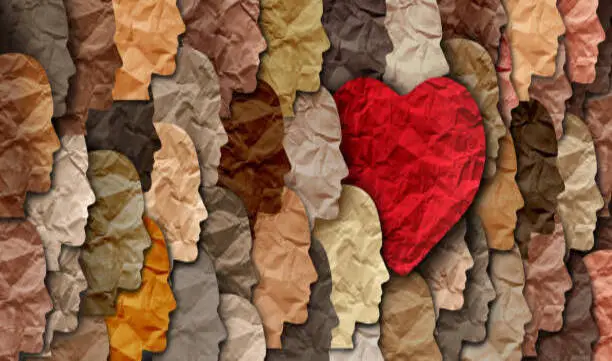
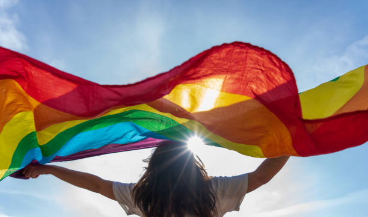
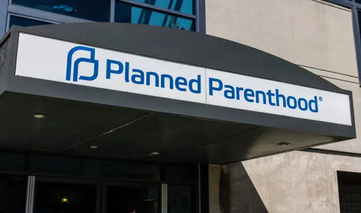

Increasing hate crimes against the transgender community in New York have detrimental effects
Hate crimes and negative attitudes towards transgender individuals continue to increase, resulting from new legislation across the nation and harmful rhetoric in the media. This environment has mental and physical consequences for the community, specifically transgender youth.
trigger warning: hate crimes, suicide, sexual and domestic violence
By Mikayla Melo

2021 pride march in Stuttgart, Germany. Source: Unsplash Free Images
Anti-transgender legislation
According to the Trans Legislation Tracker, there are almost 400 active bills targeting transgender individuals across 49 states at this moment, including two in New York. Out of these bills, about 85 have passed and been signed into law.
The majority of these bills affect healthcare and youth sports. More specifically, the bills attempt to exclude transgender individuals from participating in sports and ban gender affirming healthcare. Several of the bills also affect educational settings, with some even requiring that a guardian and teacher must approve a child’s pronouns or banning books that promote anything outside of the gender binary. Jimmy Monto, President of CNY Pride and the first ever openly LGBTQ+ elected official in Syracuse, spoke about the nature of the legislation.
“Recently, we have seen our share of political groups trying to limit basic education and rights for the community,” said Monto.
While the laws may not directly increase hate crimes, the rhetoric in the media surrounding the legislation directly correlates with rising prejudice, according to Monto.
“Political figures are saying not only are you not normal, not only are you not good enough, but we're going to try to pass laws that limit your ability just to live,” said Monto.
Transgender individuals face significant danger, whether that is harassment or assault. According to a report by Human Rights Watch, dozens of fatal attacks against transgender people occur every year, illustrating a much larger pattern of general violence against this population. It is important to recognize that this issue is not exclusive to more conservative states. Even in New York, a generally progressive state, hate crimes against transgender individuals continue to increase.
Violence against the community
The nature of hate crimes against transgender individuals is somewhat different from other marginalized populations. For one, transgender individuals experience a much higher rate of sexual violence. According to the Office for Victims of Crime, one in two transgender persons will experience sexual violence of some kind in their lifetime, with rates being even higher in transgender people of color. This violence is perpetrated by strangers, acquaintances, and even police officers.
In addition to sexual violence, transgender people are victims of domestic violence at alarming rates. According to the American Journal of Public Health, individuals that identify outside of the gender binary experience uniquely high rates of intimate partner violence.
Intimate partner violence (IPV) can be defined as physical, sexual, or psychological violence by a current or former domestic partner, resulting in severe physical or mental injury. Transgender individuals are also uniquely vulnerable, with partners misgendering them, threatening to share their identity, or exploiting societal insecurities.
A study by the Williams Institute demonstrated that transgender individuals had significantly higher rates of violent victimization in general, almost four times more than cisgender individuals. While other marginalized groups still experience a large amount of prejudice and discrimination, violence against the transgender community is much more common and physical.
Mental, emotional, and physical consequences
New legislation, increasing violence, and harmful rhetoric all take a toll on the transgender community. These factors harm all areas of an individual’s life: mental, physical, financial, social, and psychological. A common misconception in the media is that transgender individuals experience more mental health issues because of their personal lifestyles. Monto explains that it is not the identity that is the problem, but the way society treats them.
“There's always an undercurrent of trauma with people that are being told that being themselves is wrong,” said Monto.
Because transgender persons experience bias, prejudice, and discrimination at a much higher rate, their mental health diminishes at a much higher rate as well. Those who identify as transgender experience higher rates of depression, anxiety, suicide, loneliness, and gender dysphoria, according to Monto.
“All you have to do is look at what suicide rates look like for young transgender Americans… kids that are just questioning their place,” said Monto.
In addition to struggling with mental health, transgender individuals often grapple with physical issues as well. Many of these individuals struggle to find accepting healthcare providers, as many doctors deny care or treat them unfairly, resulting in some transgender people avoiding doctors altogether. Due to new legislation, gender affirming healthcare is increasingly rare, despite almost all professional medical associations agreeing that gender affirming care is the best practice. Medical providers are now moving to “safe states”, leaving vulnerable communities with little to no resources.
Resources and how to help
Despite there being many factors working against the transgender community, there are also several groups and organizations doing important work to combat these issues.
Syracuse University is working to create a safer space for the transgender community. SU now offers free therapy and a community clinic to support transgender students, faculty, and staff. The Barnes Center at the Arch is also implementing new gender-affirming training for all of its staff. Additionally, the recreation center is designating specific times and spaces for LGBTQ+ students to feel safe while they exercise. Gender-affirming healthcare is included in the student insurance plan, and the Barnes pharmacy offers several resources such as prescribed hormones and binders.
CNY Pride is a volunteer organization that works to support the LGBTQ+ community of Central New York. According to Monto, CNY Pride connects individuals in need with the best resources for them. The organization also serves as a strong social network for the community.
Even as an individual, there are many ways to help. Educating yourself and others, using your own pronouns regularly, using the correct pronouns for others, and promoting active allyship are all simple ways that you can help support the transgender community.
Active allyship requires those with privilege to come forward and publicly support marginalized groups. It means using your influence, power, and personal voice to combat social and systemic prejudice. It is important to create space for those affected, who may be underrepresented or undervalued, and advocate for their needs.
Additional Resources
CNY Civil Liberties Union
 National defender of civil liberties and civil rightsCentral New York Pride
 Encourages and supports the LGBTQ+ community and families in Central NYPlanned Parenthood
lalalalala
Trusted healthcare provider for reproductive care and gender affirming services